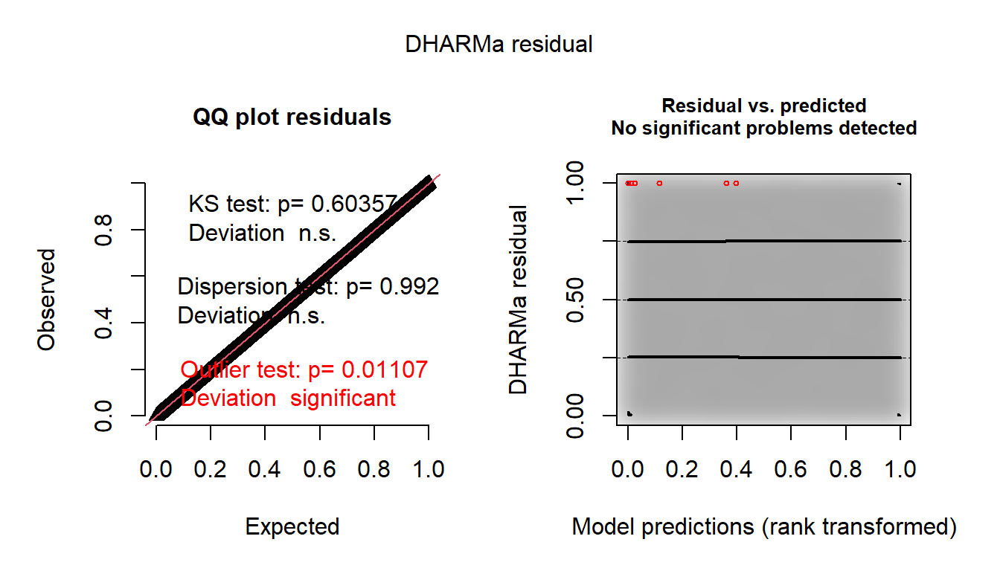
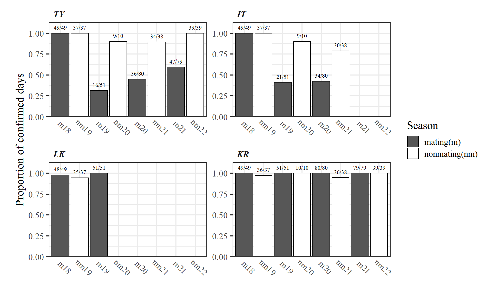

4 TYとメスのCSIの計算
4.1 CSIの定義
ここでは、TYとのCSIを算出する。
算出方法は Yamaguchi & Kazahari (2022) に従う。CSIの算出式は以下の通り。なお、\(i = 1,2,3,...,N\)はメスのIDを表す。\(P_i\)の算出の際にはTYと毛づくろいしているポイントは除いた。対象としたのは2018年時点で5歳以上だった非発情の個体である。
- \(G_{i}\): メスiとTYの毛づくろい時間割合 (TYと毛づくろいしたポイント数/総ポイント数)
- \(P_{i}\): メスiとTYの近接時間割合 (3m以内にTYがいたポイント数/地上採食または休息したポイント数)
- \(\overline{G}: \frac{1}{N} \sum^{N}_{i=1}G_{i}\)
- \(\overline{P}: \frac{1}{N} \sum^{N}_{i=1}P_{i}\)
\[ CSI_{i} = \frac{\left(\frac{G_{i}}{\overline{G}} +\frac{P_{i}}{\overline{P}}\right)}{2} \;\;(i = 1,2,\dots,N) \]
使用するのは2018年交尾期、2019年交尾期、2019年非交尾期、2021年非交尾期、2022年非交尾期のデータである。
4.2 データの読み込みと加工
まずは、TYの出入りがあった2019年交尾期、2021年非交尾期についてTYが確認できた時間帯のデータを読み込む。
TY_19m <- read_excel("C:/Users/Tsubasa Yamaguchi/Desktop/Data/data/2019mating/2019mating_raw.xlsx",
sheet = "male_presence_long") %>%
filter(maleID == "TY") %>%
mutate_at(5:6, ~make_datetime(year(date), month(date), mday(date),
hour(.),minute(.))) %>%
mutate(date = as_date(date)) %>%
## 分派集団にいるときは除く
filter(groupID != 41 & groupID != 53 & groupID != 54)
TY_21nm <- read_excel("C:/Users/Tsubasa Yamaguchi/Desktop/Data/data/2021nonmating/2021nonmating_raw.xlsx",
sheet = "male_presence_long") %>%
filter(maleID == "TY") %>%
mutate_at(5:6, ~make_datetime(year(date), month(date), mday(date),
hour(.),minute(.))) %>%
mutate(date = as_date(date)) 上記2つの期間の個体追跡データに、各個体追跡セッション中にTYが確認できていたかを表す列を追加し、TYが確認できたものだけを抽出する(focal_19m_b、focal_21nm_b)。
focal_19m %>%
distinct(no_focal, date, start_time, fin_time) %>%
left_join(TY_19m %>% select(date, male_presence, first, last), by = "date") %>%
## 個体追跡セッション中にTYが確認されていたか
mutate(TY = ifelse((first <= start_time & last >= fin_time)|
(first >= start_time & first <= fin_time)|
(last <= start_time & last >= fin_time), 1, 0)) %>%
replace_na(list(TY = 0)) -> focal_19m_TY
focal_19m %>%
left_join(focal_19m_TY %>% select(no_focal, TY), by = "no_focal") %>%
filter(TY == "1") -> focal_19m_TY_b
focal_21nm %>%
distinct(no_focal, date, start_time, fin_time) %>%
left_join(TY_21nm %>% select(date, male_presence, first, last), by = "date") %>%
## 個体追跡セッション中にTYが確認されていたか
mutate(TY = ifelse((first <= start_time & last >= fin_time)|
(first >= start_time & first <= fin_time)|
(last <= start_time & last >= fin_time), 1, 0)) %>%
replace_na(list(TY = 0)) -> focal_21nm_TY
focal_21nm %>%
left_join(focal_21nm_TY %>% select(no_focal, TY), by = "no_focal") %>%
filter(TY == "1") -> focal_21nm_TY_b交尾期のデータについて、追跡個体が発情しているかの列を追加し、発情していない日のデータのみを抽出する(focal_18m_TY_b、focal_19m_TY_b)。
focal_18m %>%
left_join(female_18m %>%
rename(subject = femaleID) %>%
select(date, subject, rs2) , by = c("date", "subject")) %>%
filter(rs2 == "0") -> focal_18m_TY_b
focal_19m_TY_b %>%
left_join(female_19m %>%
rename(subject = femaleID) %>%
select(date, subject, rs2) , by = c("date", "subject")) %>%
filter(rs2 == "0") -> focal_19m_TY_b4.3 CSIの算出(全調査期間)
4.3.1 毛づくろい時間割合の算出
算出のためにデータを加工する。
## 全期間を結合
focal_all_TY <- bind_rows(focal_18m_TY_b, focal_19m_TY_b, focal_19nm,
focal_21nm_TY_b, focal_22nm)
## 毛づくろい相手を表す列を追加
focal_all_TY %>%
mutate(groom = ifelse(groomer == subject,groomee,groomer),
groom2 = ifelse(groomer2 == subject,groomee2,groomer2)) -> focal_all_TY_b各メスの追跡時間(総瞬間サンプリングポイント数)を算出する。
各個体のTYとの毛づくろい時間を算出する。
focal_all_TY_b %>%
filter(groom == "TY"|groom2 == "TY") %>%
group_by(subject) %>%
summarise(no_groom = n()) -> no_groom_TY最後に、毛づくろい時間割合を算出する。
4.3.2 近接時間割合
地上採食/地上休息・毛づくろい時にTYが3m以内にいた時間割合を算出する。
まずは、地上採食/地上休息・毛づくろいのデータのみを抽出する。また、TYと毛づくろいしているポイントは除外する。
focal_all_TY_b %>%
filter(activity %in% c("F","R","G") & T_G == "G") %>%
select(no_focal, subject, x0_1m:x1_3m, groom, groom2, study_period) %>%
replace_na(list(groom = "NA", groom2 = "NA")) %>%
filter(!(groom == "TY"|groom2 == "TY")) -> focal_prox_TY分母を算出する。なお、TYと毛づくろいしていたポイントは分母に含まないものとする。
TYと3m以内に近接していたポイント数を算出する。
focal_prox_TY %>%
filter(str_detect(x0_1m, "TY")|str_detect(x1_3m, "TY")) %>%
group_by(subject) %>%
summarise(no_prox = n()) -> no_prox_TY最後に、近接時間割合を算出する。
4.3.3 CSIの算出
それでは、上記のデータを用いてCSIを算出する。
## 平均毛づくろい時間割合
mean_groom_TY <- mean(prop_groom_TY$prop_groom)
## 平均近接時間割合
mean_prox_TY <- mean(prop_prox_TY$prop_prox)
## CSIの算出
prop_groom_TY %>%
left_join(prop_prox_TY, by = "subject") %>%
mutate(CSI_TY = ((prop_groom/mean_groom_TY) + (prop_prox/mean_prox_TY))/2) -> CSI_TY算出した値が以下の通り。Kitは一日TYに長時間毛づくろいした日があり、それが強く影響したようだ。
CSI_TY %>%
mutate(subject = fct_reorder(subject, CSI_TY)) %>%
ggplot(aes(x = subject, y = CSI_TY))+
geom_col(color = "black", fill = "white", size =0.3)+
theme_classic(base_size=12, base_family = "Arial")+
xlab("")+
ylab(expression(CSI[i]))+
coord_flip(ylim = c(0,5.3)) +
scale_y_continuous(breaks = seq(0,5.2, by= 0.5),
expand= c(0,0))+
theme(aspect.ratio=1,
axis.text.y = element_text(face = "italic",
hjust=0),
axis.ticks.y = element_blank(),
axis.title.y = element_text(size = 8),
axis.title.x = element_text(size = 10.5),
plot.margin=grid::unit(c(0,0,0,0), "mm"),
plot.title = element_text(hjust = 0.5)) 
4.4 CSIの算出(2018交尾期～2019交尾期)
4.4.1 毛づくろい時間割合の算出
算出のためにデータを加工する。
## 期間を結合
focal_fh_TY <- bind_rows(focal_18m_TY_b, focal_19m_TY_b, focal_19nm)
## 毛づくろい相手を表す列を追加
focal_fh_TY %>%
mutate(groom = ifelse(groomer == subject,groomee,groomer),
groom2 = ifelse(groomer2 == subject,groomee2,groomer2)) -> focal_fh_TY_b各メスの追跡時間(総瞬間サンプリングポイント数)を算出する。
各個体のTYとの毛づくろい時間を算出する。
focal_fh_TY_b %>%
filter(groom == "TY"|groom2 == "TY") %>%
group_by(subject) %>%
summarise(no_groom = n()) -> no_groom_fh_TY最後に、毛づくろい時間割合を算出する。
4.4.2 近接時間割合
地上採食/地上休息・毛づくろい時にTYが3m以内にいた時間割合を算出する。
まずは、地上採食/地上休息・毛づくろいのデータのみを抽出する。また、TYと毛づくろいしているポイントは除外する。
focal_fh_TY_b %>%
filter(activity %in% c("F","R","G") & T_G == "G") %>%
select(no_focal, subject, x0_1m:x1_3m, groom, groom2) %>%
replace_na(list(groom = "NA", groom2 = "NA")) %>%
filter(!(groom == "TY"|groom2 == "TY")) -> focal_prox_fh_TY分母を算出する。なお、TYと毛づくろいしていたポイントは分母に含まないものとする。
TYと3m以内に近接していたポイント数を算出する。
focal_prox_fh_TY %>%
filter(str_detect(x0_1m, "TY")|str_detect(x1_3m, "TY")) %>%
group_by(subject) %>%
summarise(no_prox = n()) -> no_prox_fh_TY最後に、近接時間割合を算出する。
4.4.3 CSIの算出
それでは、上記のデータを用いてCSIを算出する。
## 平均毛づくろい時間割合
mean_groom_fh_TY <- mean(prop_groom_fh_TY$prop_groom)
## 平均近接時間割合
mean_prox_fh_TY <- mean(prop_prox_fh_TY$prop_prox)
## CSIの算出
prop_groom_fh_TY %>%
left_join(prop_prox_fh_TY, by = "subject") %>%
mutate(CSI_TY = ((prop_groom/mean_groom_fh_TY) + (prop_prox/mean_prox_fh_TY))/2) -> CSI_fh_TY算出した値が以下の通り。
CSI_fh_TY %>%
mutate(subject = fct_reorder(subject, CSI_TY)) %>%
ggplot(aes(x = subject, y = CSI_TY))+
geom_col(color = "black", fill = "white", size =0.3)+
theme_classic(base_size=12, base_family = "Arial")+
xlab("")+
ylab(expression(CSI[i]))+
coord_flip(ylim = c(0,5.3)) +
scale_y_continuous(breaks = seq(0,5.2, by= 0.5),
expand= c(0,0))+
theme(aspect.ratio=1,
axis.text.y = element_text(face = "italic",
hjust=0),
axis.ticks.y = element_blank(),
axis.title.y = element_text(size = 8),
axis.title.x = element_text(size = 10.5),
plot.margin=grid::unit(c(0,0,0,0), "mm"),
plot.title = element_text(hjust = 0.5)) 
4.5 CSIの算出(非交尾期のみ)
4.5.1 毛づくろい時間割合の算出
算出のためにデータを加工する。
## 全期間を結合
focal_nm_TY <- bind_rows(focal_19nm, focal_21nm_TY_b, focal_22nm)
## 毛づくろい相手を表す列を追加
focal_nm_TY %>%
mutate(groom = ifelse(groomer == subject,groomee,groomer),
groom2 = ifelse(groomer2 == subject,groomee2,groomer2)) -> focal_nm_TY_b各メスの追跡時間(総瞬間サンプリングポイント数)を算出する。
各個体のTYとの毛づくろい時間を算出する。
focal_nm_TY_b %>%
filter(groom == "TY"|groom2 == "TY") %>%
group_by(subject) %>%
summarise(no_groom = n()) -> no_groom_nm_TY最後に、毛づくろい時間割合を算出する。
4.5.2 近接時間割合
地上採食/地上休息・毛づくろい時にTYが3m以内にいた時間割合を算出する。
まずは、地上採食/地上休息・毛づくろいのデータのみを抽出する。また、TYと毛づくろいしているポイントは除外する。
focal_nm_TY_b %>%
filter(activity %in% c("F","R","G") & T_G == "G") %>%
select(no_focal, subject, x0_1m:x1_3m, groom, groom2) %>%
replace_na(list(groom = "NA", groom2 = "NA")) %>%
filter(!(groom == "TY"|groom2 == "TY")) -> focal_prox_nm_TY分母を算出する。なお、TYと毛づくろいしていたポイントは分母に含まないものとする。
TYと3m以内に近接していたポイント数を算出する。
focal_prox_nm_TY %>%
filter(str_detect(x0_1m, "TY")|str_detect(x1_3m, "TY")) %>%
group_by(subject) %>%
summarise(no_prox = n()) -> no_prox_nm_TY最後に、近接時間割合を算出する。
4.5.3 CSIの算出
それでは、上記のデータを用いてCSIを算出する。
## 平均毛づくろい時間割合
mean_groom_nm_TY <- mean(prop_groom_nm_TY$prop_groom)
## 平均近接時間割合
mean_prox_nm_TY <- mean(prop_prox_nm_TY$prop_prox)
## CSIの算出
prop_groom_nm_TY %>%
left_join(prop_prox_nm_TY, by = "subject") %>%
mutate(CSI_TY = ((prop_groom/mean_groom_nm_TY) + (prop_prox/mean_prox_nm_TY))/2) -> CSI_nm_TY算出した値が以下の通り。
CSI_nm_TY %>%
mutate(subject = fct_reorder(subject, CSI_TY)) %>%
ggplot(aes(x = subject, y = CSI_TY))+
geom_col(color = "black", fill = "white", size =0.3)+
theme_classic(base_size=12, base_family = "Arial")+
xlab("")+
ylab(expression(CSI[i]))+
coord_flip(ylim = c(0,5.3)) +
scale_y_continuous(breaks = seq(0,5.2, by= 0.5),
expand= c(0,0))+
theme(aspect.ratio=1,
axis.text.y = element_text(face = "italic",
hjust=0),
axis.ticks.y = element_blank(),
axis.title.y = element_text(size = 8),
axis.title.x = element_text(size = 10.5),
plot.margin=grid::unit(c(0,0,0,0), "mm"),
plot.title = element_text(hjust = 0.5)) 
4.6 CSIの算出(調査期間ごと)
4.6.1 毛づくろい時間割合の算出
各メスの追跡時間(総瞬間サンプリングポイント数)を調査期間ごとに算出する。
各個体のTYとの毛づくろい時間を算出する。
focal_all_TY_b %>%
filter(groom == "TY"|groom2 == "TY") %>%
group_by(subject, study_period) %>%
summarise(no_groom = n()) -> no_groom_sp_TY最後に、毛づくろい時間割合を算出する。
4.6.2 近接時間割合
地上採食/地上休息・毛づくろい時にTYが3m以内にいた時間割合を算出する。
調査期間ごとに分母を算出する。なお、TYと毛づくろいしていたポイントは分母に含まないものとする。
TYと3m以内に近接していたポイント数を算出する。
focal_prox_TY %>%
filter(str_detect(x0_1m, "TY")|str_detect(x1_3m, "TY")) %>%
group_by(subject, study_period) %>%
summarise(no_prox = n()) -> no_prox_sp_TY最後に、近接時間割合を算出する。
4.6.3 CSIの算出
それでは、上記のデータを用いてCSIを算出する。
## CSIの算出
prop_groom_sp_TY %>%
left_join(prop_prox_sp_TY, by = c("subject","study_period")) %>%
group_by(study_period) %>%
mutate(mean_groom = mean(prop_groom),
mean_prox = mean(prop_prox)) %>%
mutate(CSI_TY = ((prop_groom/mean_groom) + (prop_prox/mean_prox))/2) -> CSI_sp_TY算出した値が以下の通り。
CSI_sp_TY %>%
ggplot(aes(x = study_period, y = CSI_TY))+
geom_point()+
geom_line(aes(group = subject))+
theme_bw()+
facet_rep_wrap(~subject, repeat.tick.labels = TRUE,
scales = "free")+
ylab(expression(CSI[i]))